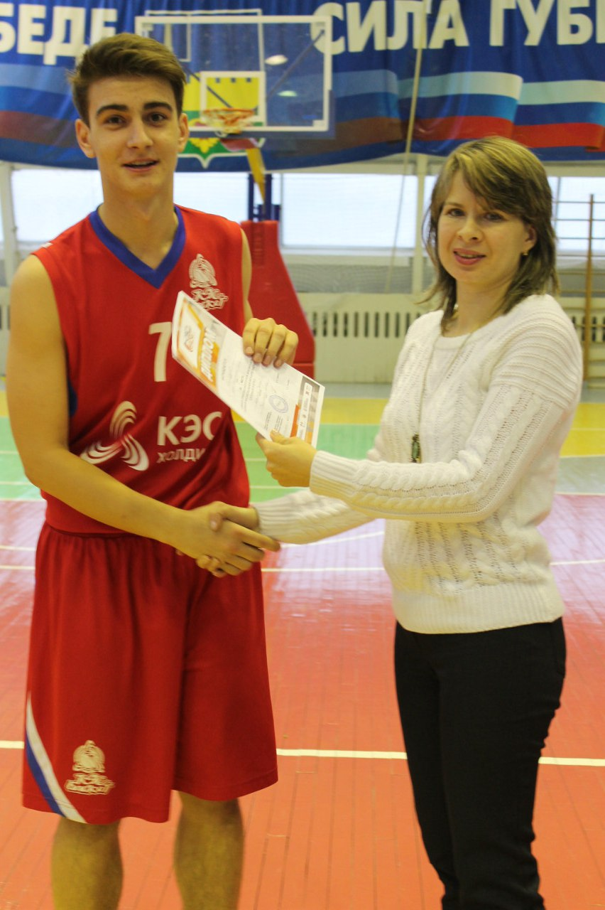
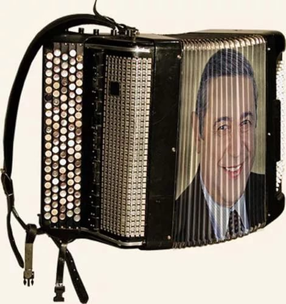

О книгах
Я разносторонний человек и у меня много увлечений,в которых есть определенные достижения.Начнем с того,что с самого детства я очень любил читать и эту традицию продолжаю до сих пор.
Моими любимыми книгами были 7 частей о волшебном мире, и о жизни Гарри Поттера.Меня очень захватывали сюжеты, и всегда было интересно наблюдать за взаимовыручкой трех друзей.
И какого было мое счастье, когда недавно на полках книжного магазина я нашел, недавно выпущенную книгу о продолжении приключений.
Так же я люблю читать стихи наших авторов, в особенности моего любимого поэта Эдуарда Асадова.
О баскетболе
Со средней школы я заинтересовался спортом, я выбрал самую динамичную игру с мячом- баскетбол.
Через 4 года я стал капитаном команды школьной баскетбольной команды, с которой завоевал множество медалей и наград за лучшую игру.
Вот уже 7 год я занимаюсь этим видом спорта и тренируюсь в команде своего вуза.

О Музыке
С 4 по 8 класс я занимался в музыкальной школе по классу:баян. И закончил ее с красным дипломом.Выступал на разных праздниках и концертах.
Так же я люблю петь и делаю это весьма неплохо, по словам других.
Пел сольно и в дуэтах, выступал на каждом концерте школы и поселка. Учавствовал во многих конкурсах и занимал призовые места.

Другое
На самом деле мог бы рассказывать о своих увлечениях бесконечно, ведь у каждого человека их множество, поэтому сейчас перечислю другие увлечения вкратце.
Всегда любил шутить,поэтому часто учавствовал в КВН,участвовал в конкурсе " Ученик года", в олимпиадах, а последние школьные годы танцевал вальс и танго.